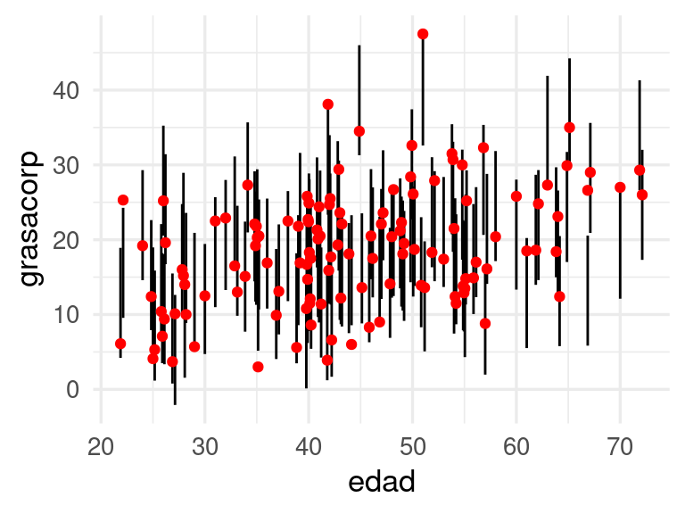
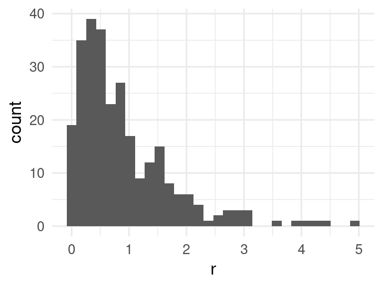
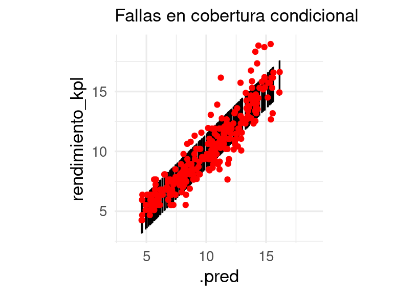
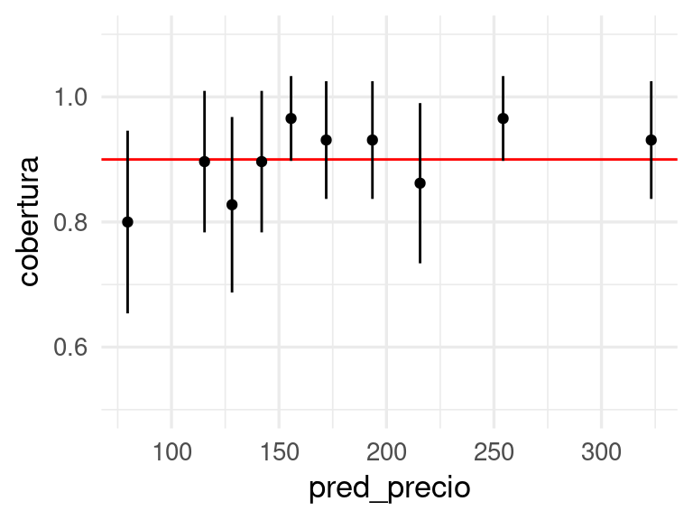
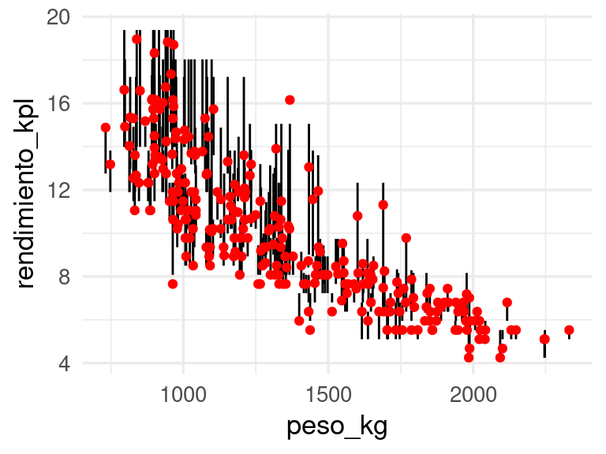

library(tidyverse)
library(tidymodels)
library(gt)
dat_grasa <- read_csv(file = '../datos/bodyfat.csv')
# dividir muestra
set.seed(183)
grasa_particion <- initial_split(dat_grasa, 0.5)
grasa_ent <- training(grasa_particion)
grasa_cal <- testing(grasa_particion)
# receta
grasa_receta <- recipe(grasacorp ~ ., grasa_ent)
# lasso
modelo_gc <- linear_reg(mixture = 1, penalty = 0.2) |>
set_engine("glmnet", lambda.min.ratio = 1e-20)
# definir flujo y ajustar
flujo_2 <- workflow() |>
add_model(modelo_gc) |>
add_recipe(grasa_receta)
# ajuste
flujo_2 <- flujo_2 |> fit(grasa_ent)7 Incertidumbre en las predicciones
En todos los casos hasta ahora, vimos cómo hacer:
- Predicciones puntuales (un solo valor).
- Evaluar un conjunto razonablemente grande de predicciones con el error de predicción, que es un promedio de la pérdida seleccionada.
Este enfoque es razonable en algunos casos y otros no. Es razonable cuando:
- El error de predicción es relativamente chico (tenemos predicciones muy precisas), y/o los costos de predicciones individuales son bajos, especialmente si comparamos con la mejoría en la automatización y desempeño del proceso.
- Hacemos un gran número de predicciones, ninguna de ellas con costos relativos gigantescos, de forma que el costo promedio representa adecuadamente el desempeño general.
Un ejemplo del primer caso es el de la lectura de medidores: en este caso, nuestro modelo es bastante preciso y las predicciones puntuales son suficientes. Igualmente, al hacer recomendaciones de películas o productos: la automatización en el proceso presenta buenas ganancias, y recomendar una película incorrecta no es grave mientras que en promedio tengamos buenos aciertos.
Sin embargo, muchos problemas de predicción no son así, y el error de predicciones individuales juega un papel importante:
- Cuando tomamos decisiones potencialmente costosas con cada predicción individual, de forma que el promedio del error a largo plazo es menos relevante.
- Nuestras predicciones van a usarse downstream para tomar una serie de decisiones que no conocemos de antemano, y en consecuencia la estructura de costos de un error es compleja y sólo parcialmente definida. Ninguna pérdida usual refleja correctamente el costo-beneficio de usar un modelo.
Ejemplos del primero puede ser el de predicción de precios de casas: errores de 20% en el precio puede convertir una compra deseable en una que produce pérdidas grandes. En el segundo, un ejemplo es la estimación futura de compras de un cliente (asociado al valor presente de los clientes o usuarios): dependiendo de esta estimación puede ser que tomemos una serie de decisiones distintas acerca de productos, promociones, etc. (no definidos de antemano generalmente) para ofrecer que tienen consecuencias considerables. Otro ejemplo es predecir si en una tomografía hay evidencia de cáncer: aún cuando la probabilidad de que sea una imagen “normal” es alta (digamos 75%), una probablidad de 25% de que sea cancerígena debe ser considerada en decisiones posteriores.
Otro ejemplo común es el de pronósticos de demanda, donde es importante dar más contexto que una sola predicción puntual: un intervalo de incertidumbre puede mostrar que en algunos casos es muy probable que el inventario se agote, pero en otros casos no. En ambos casos, costos y ganancias complementan esta información.
Nota
#Incertidumbre en predicciones
En muchos casos, es deseable producir alguna cuantificación de la incertidumbre en predicciones individuales, en lugar de proveer sólo una predicción puntual. Esta cuantificación puede ofrecerse a los tomadores de decisiones, y puede utilizarse también en simulaciones costo-beneficio de decisiones tomadas downstream.
Una manera básica de cuantificar la incertidumbre es construir intervalos predictivos. En lugar de producir una predicción puntual \(\hat{f}(x)\), producimos dos valores \([\hat{q}_1(x), \hat{q}_2(x)]\) donde es probable que caiga el valor observado \(y\). Por ejemplo, si construimos intervalos del 90%, quisiéramos entonces que se cumpla la garantía de cobertura siguiente: \[P(\mathbf{y}\in [\hat{q}_1(\mathbf{x}), \hat{q}_2(\mathbf{x})]) = 0.90\] donde la probabilidad es tomada sobre toda la población \((\mathbf{x}, \mathbf{y})\) de interés. Por ejemplo, para el precio de una casa, en lugar de producir una sola predicción de 120 mil dólares, produciríamos un intervalo de 50 a 180 mil dólares. Eso nos pone en una situación considerablemente distinta que si el intervalo fuera de 110 a 130 mil dólares, por ejemplo para una decisión de una compañía de bienes raíces.
7.1 Inferencia predictiva conforme
Tradicionalmente, este tipo de intervalos predictivos se construyen bajo argumentos teóricos en modelos relativamente simples con supuestos fuertes que hay que checar. En aprendizaje automático, donde utilizamos predictores mucho más complejos que modelos lineales, en dimensión alta y con mecanismos complejos de limpieza y selección de variables, es difícil seguir esta ruta tradicional.
En lugar de eso, utilizaremos la idea fundamental de división de muestras (que en este caso a veces les llamamos entrenamiento-calibración, en lugar de entrenamiento-validación) para producir intervalos con cobertura garantizada independientemente de si se cumplen o no ciertos supuestos teóricos. La idea es la siguiente:
Nota
Intervalos predictivos conformes.
Suponiendo que los datos se extraen de forma independiente de una misma población, dividimos los datos al azar en dos conjuntos: una muestra de entrenamiento y una de calibración.
- Construimos con una muestra de entrenamiento \((x_i, y_i)\) nuestro predictor \(\hat{f}(x)\) (usando cualquier método).
- Usamos una muestra de calibración separada para evaluar el error promedio, y adicionalmente, calculamos los residuales \(\mathbf{r}_i = |\mathbf{y}_i - \hat{f}(\mathbf{x}_i)|\)
- Si queremos intervalos del 90%, calculamos ahora \(q\), que es el cuantil 90% de los valores \(\mathbf{r}_i\)
- Para un nuevo valor de las entradas \(\mathbf{x}\), nuestro intervalo es \[[\hat{f}(\mathbf{x}) - d, \hat{f}(\mathbf{x}) + d]\]
Para esta nueva observación \((\mathbf{x}, \mathbf{y})\),
\[P(\mathbf{y} \in[\hat{f}(\mathbf{x}) - d, \hat{f}(\mathbf{x}) + d])\gtrsim 0.90\]
donde la desigualdad quiere decir que la cobertura es al menos de 90%, y muy cercana a 90% si la muestra de prueba cumple \(n\geq 100\).
La demostración es relativamente simple (especialmente el hecho de que la cobertura es mayor o igual a 90%) y no requiere ningún supuesto adicional acerca del predictor o al calidad del ajuste (ver Distribution-Free Predictive Inference for Regression).
7.2 Ejemplo: bodyfat
En el ejemplo de grasa corporal utilizamos lasso para seleccionar un modelo. Podemos construir intervalos predictivos (split-conformal) como sigue. En este ejemplo haremos todo manualmente:
Ahora, sobre la muestra de calibración evaluamos el error y calculamos residuales y su distribución:
# Hacer predicciones y obtener residuales (muestra de calibración)
preds_gc_tbl <- predict(flujo_2, grasa_cal) |>
bind_cols(grasa_cal) |>
mutate(residual = abs(grasacorp - .pred))
# obtener cuantil
cuantiles_res <- quantile(preds_gc_tbl |> pull(residual),
probs = c(0.90))
# graficar
ggplot(preds_gc_tbl, aes(x = residual)) +
geom_histogram(binwidth = 0.75) +
geom_vline(xintercept = cuantiles_res, colour = "red")
cuantiles_res |> round(2) 90%
7.26 Una gráfica útil es la de predicciones en el eje horizontal contra intervalos y valores observados en el eje \(y\):
preds_gc_tbl <- preds_gc_tbl |>
mutate(inf = .pred - cuantiles_res, sup = .pred + cuantiles_res)
ggplot(preds_gc_tbl, aes(x = .pred, ymin = inf, ymax = sup, y = grasacorp)) +
geom_abline() +
geom_point(colour = "red") +
geom_linerange(alpha = 0.5) Donde vemos que la cobertura parece ser similar para todos los rangos de valores de predicción. Podemos hacer también una tabla simple como la que sigue para verificar la cobertura:
n_grupos <- 4 # podemos usar más grupos si tenemos más datos
preds_gc_tbl |>
rename(y = grasacorp) |>
mutate(grupo_pred = cut_number(.pred, n = n_grupos)) |>
group_by(grupo_pred) |>
summarise(n = n(), cobertura = mean(y >= inf & y <= sup)) |>
mutate(error_cob = 2 * sqrt(cobertura * (1- cobertura) / n)) |>
gt() |> fmt_number(where(is_double), decimals = 2)| grupo_pred | n | cobertura | error_cob |
|---|---|---|---|
| [5.27,15.1] | 32 | 0.88 | 0.12 |
| (15.1,18.4] | 31 | 0.87 | 0.12 |
| (18.4,21.9] | 31 | 0.97 | 0.06 |
| (21.9,39.9] | 32 | 0.88 | 0.12 |
Adicionalmente, podemos también ver cobertura con respecto a alguna variable de interés, por ejemplo, la edad:
ggplot(preds_gc_tbl, aes(x = edad, ymin = inf, ymax = sup, y = grasacorp)) +
geom_linerange(position = position_dodge2(width = 0.5)) +
geom_point(colour = "red", position = position_dodge2(width = 0.5)) Predicción conforme con tidymodels (opcional)
Lo que acabamos de hacer arriba se puede hacer como siguen en tidymodels:
library(probably)
# modelo ajustado y conjunto de datos de calibraci´{on:
conformal_int <- int_conformal_split(flujo_2, grasa_cal)
conformal_intSplit Conformal inference
preprocessor: recipe
model: linear_reg (engine = glmnet)
calibration set size: 126
Use `predict(object, new_data, level)` to compute prediction intervalspreds_int_tbl <-
predict(conformal_int, grasa_cal, level = 0.90) |>
bind_cols(grasa_cal)ggplot(preds_int_tbl, aes(x = edad,
ymin = .pred_lower, ymax = .pred_upper, y = grasacorp)) +
geom_linerange(position = position_dodge2(width = 0.5)) +
geom_point(colour = "red", position = position_dodge2(width = 0.5)) 
7.3 Cobertura local para intervalos conformes
La cobertura promedio es confiable y robusta, sin embargo, se requieren algunos elementos adicionales para que los intervalos sean más útiles. Quisiéramos también que la cobertura local alrededor de cualquier región del las \(x\)’s sea cercana al 90% (cobertura condicional). Esto es más dificíl de alcanzar. Un chequeo básico que podemos hacer es el siguiente:
- Para cada nivel de predicción \(\hat{y} = \hat{f}(x)\), los intervalos tienen cobertura de 90%. Como esto sólo involucra las predicciones, los valores observados, y los intervalos predictivos, esto puede checarse en la práctica con una tabla o gráfica.
En problemas de dimensión alta, sin embargo, es difícil checar que la cobertura local se cumple en toda \(x\). Podemos, sin embargo, hacer verificaciones de cobertura a lo largo de entradas \(x_i\) particulares que sean de particular importancia. Por ejemplo, si \(x_i\) indica nivel socioeconómico de un hogar, no quisiéramos introducir artefactos en la decisión debido a que la cobertura es desigual para distintos valores de esta variable de entrada.
Generalmente, deficiencias grandes de cobertura local pueden revelarse con alguna de estas verificaciones.
7.3.1 Ejemplo: fallas en cobertura local
Revisamos nuestro ejemplo de rendimiento de coches:
library(tidyverse)
library(tidymodels)
library(gt)
auto <- read_csv("../datos/auto.csv")
datos_auto <- auto[, c('name', 'weight','year', 'mpg', 'displacement')]
datos_auto <- datos_auto |> mutate(
peso_kg = weight * 0.45359237,
rendimiento_kpl = mpg * (1.609344 / 3.78541178),
año = year)Vamos a separa en muestra de entrenamiento y de prueba estos datos. Podemos hacerlo como sigue (75% para entrenamiento aproximadamente en este caso, así obtenemos alrededor de 100 casos para prueba):
set.seed(121)
datos_split <- initial_split(datos_auto, prop = 0.3)
datos_entrena <- training(datos_split)
datos_prueba <- testing(datos_split)
# preprocesamiento y flujo
receta_lineal <- recipe(rendimiento_kpl ~ peso_kg + año, datos_entrena) |>
step_ns(peso_kg, deg_free = 3)
mod_lineal <- linear_reg() |>
set_engine("lm")
flujo <- workflow() |>
add_recipe(receta_lineal) |>
add_model(mod_lineal)
flujo_ajustado_auto <- fit(flujo, datos_entrena)Una vez que tenemos el flujo ajustado, podemos ver cómo se comportan los residuales:
preds_tbl <- predict(flujo_ajustado_auto, datos_prueba) |>
bind_cols(datos_prueba) |>
mutate(r = abs(rendimiento_kpl - .pred))
ggplot(preds_tbl, aes(x = r)) + geom_histogram()`stat_bin()` using `bins = 30`. Pick better value with `binwidth`.
q <- quantile(preds_tbl |> pull(r), probs = c(0.80)) |>
round(2)
q 80%
1.46 Podemos ahora construir intervalos de 80% para nuestras predicciones de la siguiente forma:
preds_tbl <- preds_tbl |>
mutate(inf = .pred - q,
sup = .pred + q)Por definición, estos intervalos tienen cobertura promedio sobre nuevos datos de aproximadamente el 80%. Sin embargo, la cobertura puede nos ser uniforme en distintas regiones de las entradas. Como sugerimos arriba, podemos checar primero la respuesta en función de la predicción:
ggplot(preds_tbl, aes(x = .pred, y = rendimiento_kpl, ymin = inf, ymax = sup)) +
geom_linerange() +
geom_point(colour = "red") + coord_obs_pred() +
labs(subtitle = "Fallas en cobertura condicional")
También podemos verificar con una tabla que la cobertura no es uniforme:
n_grupos <- 6 # podemos usar más grupos si tenemos más datos
preds_tbl |>
rename(y = rendimiento_kpl) |>
mutate(grupo_pred = cut_number(.pred, n = n_grupos)) |>
group_by(grupo_pred) |>
summarise(n = n(), cobertura = mean(y >= inf & y <= sup)) |>
mutate(error_e = 2 * sqrt(cobertura * (1- cobertura) / n)) |>
gt() |> fmt_number(where(is_double), decimals = 2)| grupo_pred | n | cobertura | error_e |
|---|---|---|---|
| [4.59,6.54] | 46 | 0.89 | 0.09 |
| (6.54,8.18] | 46 | 0.89 | 0.09 |
| (8.18,10.3] | 46 | 0.78 | 0.12 |
| (10.3,11.6] | 45 | 0.78 | 0.12 |
| (11.6,13.5] | 46 | 0.72 | 0.13 |
| (13.5,16.1] | 46 | 0.74 | 0.13 |
Estos intervalos son poco útiles porque exageran la incertidumbre para valores altos y la subestiman para valores bajos. Adicionalmente, podemos checar variables que consideramos importantes para ver cómo se comportan los intervalos. En este caso, por ejemplo, usamos la variable peso,
ggplot(preds_tbl, aes(x = peso_kg, y = rendimiento_kpl, ymin = inf, ymax = sup)) +
geom_linerange() +
geom_point(colour = "red") +
labs(subtitle = "Fallas en cobertura condicional")Y vemos que aunque nuestros intervalos son del 90%, tienen baja cobertura para pesos bajos y sobrecubren para pesos altos.
Probando intervalos predictivos
- Checamos la cobertura uniforme de nuestros intervalos predictivos primero viendo el comportamiento de intervalos dependiendo de la predicción.
- Adicionalmente, podemos también checar intervalos en función de variables importantes para ver si en distintas regiones la cobertura es uniforme.
Hay varias maneras de hacer los intervalos conformes adaptativos:
- Cambiando la función de pérdida que usamos para construir los intervalos podemos obtener mejores resultados
- Utilizando regresión cuantílica conformalizada
Primero vemos el primer enfoque:
7.4 Ejemplo: otras funciones de pérdida
El mismo método para producir intervalos conformes que vimos arriba puede aplicarse para otras funciones de pérdida más apropiadas para cada problema. Supongamos que en el problema de predicción de precios, nos interesa particularmente la pérdida relativa dada por \[L(y, \hat{f}(x)) = \frac{|y - \hat{f}(x)|}{\hat{f}(x)}\] En este caso, a la pérdida \(L(y, \hat{f}(x))\) a veces se le llama medida de conformidad de las predicciones. Podemos aplicar entonces el mismo procedimiento:
- Construimos con una muestra de entrenamiento \((x_i, y_i)\) nuestro predictor \(\hat{f}(x)\)
- Usamos una muestra de calibración separada para evaluar el error promedio, y adicionalmente, calculamos los valores \(\mathbf{r}_i = L(\mathbf{y}_i , \hat{f}(\mathbf{x}_i))\)
- Si queremos intervalos del 90%, calculamos ahora \(q\), que es el cuantil 90% de los valores \(\mathbf{r}_i\)
- Para un nuevo valor de las entradas \(\mathbf{x}\), nuestro intervalo ( o más bien región predictiva) es todos los valores de \(y\) que cumplen \[I(\mathbf{x}) = \{y : L(y, \hat{f}(\mathbf{x})) \leq q\} \] Y resulta ser que para una nueva observación, \[P(\mathbf{y} \in I(\mathbf{x}))\gtrsim 0.90\] Podemos ver esto con el ejemplo de precios de casas:
source("../R/casas_traducir_geo.R")
set.seed(83)
casas_split <- initial_split(casas, prop = 0.75)
casas_entrena <- training(casas_split)
receta_casas <- recipe(precio_miles ~
nombre_zona +
area_hab_m2 + area_garage_m2 + area_sotano_m2 +
area_2o_piso_m2 +
area_lote_m2 +
año_construccion +
calidad_gral + calidad_garage + calidad_sotano +
condicion_gral +
num_coches +
aire_acondicionado + condicion_venta,
data = casas_entrena) |>
step_filter(condicion_venta == "Normal") |>
step_select(-condicion_venta, skip = TRUE) |>
step_mutate(tiene_2o_piso = ifelse(area_2o_piso_m2 == 0, 1, 0)) |>
step_mutate(
area_sotano_m2 = ifelse(is.na(area_sotano_m2), 0, area_sotano_m2)) |>
step_mutate(area_garage_m2 =
ifelse(is.na(area_garage_m2), 0, area_garage_m2)) |>
step_novel(nombre_zona, calidad_sotano, calidad_garage) |>
step_ns(calidad_gral, deg_free = 2) |>
step_ns(condicion_gral, deg_free = 2) |>
step_ns(starts_with("area_lote"), deg_free = 3) |>
step_ns(starts_with("año_construccion"), deg_free = 3) |>
step_unknown(calidad_sotano, calidad_garage) |>
step_other(nombre_zona, threshold = 0.01, other = "otras") |>
step_dummy(nombre_zona, calidad_garage,
calidad_sotano, aire_acondicionado) |>
step_interact(
terms = ~ starts_with("area_garage_m2"):starts_with("calidad_garage")) |>
step_interact(
terms = ~ starts_with("area_sotano_m2"): starts_with("calidad_sotano")) |>
step_nzv(all_predictors(), freq_cut = 500 / 1, unique_cut = 1)Usaremos regresión ridge:
flujo_casas <- workflow() |>
add_recipe(receta_casas) |>
add_model(linear_reg(mixture = 0, penalty = 0.01) |>
set_engine("glmnet", lambda.min.ratio = 1e-20))
ajuste <- fit(flujo_casas, casas_entrena)Para medir el desempeño convertimos a la variable de precio multiplicando la predicción por el área habitable:
metricas <- metric_set(mape, mae, rmse, rsq)
casas_prueba_normal <- testing(casas_split) |>
filter(condicion_venta == "Normal")
metricas(casas_prueba_normal |>
bind_cols(predict(ajuste, casas_prueba_normal)),
truth = precio_miles, estimate = .pred ) |>
gt() |> fmt_number(.estimate, decimals = 2)| .metric | .estimator | .estimate |
|---|---|---|
| mape | standard | 9.05 |
| mae | standard | 15.25 |
| rmse | standard | 20.54 |
| rsq | standard | 0.92 |
La distribución de los residuales (que en este caso se llaman maś bien valores de conformidad) se ve como sigue:
preds_tbl <- casas_prueba_normal |>
bind_cols(predict(ajuste, casas_prueba_normal)) |>
mutate(residual = abs(precio_miles - .pred)/.pred)
preds_tbl |> ggplot(aes(x = residual)) + geom_histogram()`stat_bin()` using `bins = 30`. Pick better value with `binwidth`.q <- quantile(preds_tbl$residual, 0.90)set.seed(832)
preds_tbl <- preds_tbl |>
mutate(inf = .pred *(1 - q), sup = .pred *(1 + q)) |>
mutate(pred_precio = .pred ) |>
mutate(inf_precio = inf, sup_precio = sup)
ggplot(preds_tbl, aes(x = pred_precio, y = precio_miles, ymin = inf_precio,
ymax = sup_precio)) +
geom_abline() +
geom_linerange() +
geom_point(colour = "red") + coord_obs_pred()Checamos finalmente que la calibración es razonable con una tabla:
n_grupos <- 10 # podemos usar más grupos si tenemos más datos
preds_tbl |>
rename(y = precio_miles) |>
mutate(grupo_pred = cut_number(pred_precio, n = n_grupos)) |>
group_by(grupo_pred) |>
summarise(n = n(),
cobertura = mean(y >= inf_precio & y <= sup_precio),
pred_precio = mean(pred_precio)) |>
mutate(error_cob = 2 * sqrt(cobertura * (1- cobertura) / n)) |>
ggplot(aes(x = pred_precio, y = cobertura,
ymin = cobertura - error_cob, ymax = cobertura + error_cob)) +
geom_hline(yintercept = 0.9, colour = "red") +
geom_point() + geom_linerange() + ylim(c(0.5, 1.1))
7.5 Resumen
- Los intervalos conformes producidos aquí tienen garantías de cobertura promedio, pero no necesariamente condicional a valores de \(x\) particulares.
- El chequeo básico consiste en ver cómo se comporta la cobertura para distintos valores de la predicción.
- Cuando un atributo \(x\) es importante (por ejemplo por razones de discriminación, o razones de negocio), podemos checar la cobertura condicional a \(x\) (como en el ejemplo de grasa corporal de arriba).
- Una alternativa que se puede utilizar es intentar estimar directamente los cuantiles de la respuesta (por ejemplo 5 y 95% para un intervalo del 90%). Existe una función de pérdida diseñada para este propósito (veremos más adelante) que se puede aplicar a regresión lineal, redes neuronales, métodos basados en árboles y otros. Igualmente, es necesario checar y calibrar si es necesario los intervalos resultantes.
- La selección de medida de conformidad (o función de pérdida) para cada modelo no es trivial, y de esa medida depende el comportamiento de los intervalos. En problemas de regresión, pérdida absoluta y MAPE (error porcentual absoluto promedio) son usuales, y una puede desempeñarse mejor que otra.
Finalmente, es posible hacer predicción conforme con tidymodels (o paquetes de Python), consultar por ejemplo Conformal inference for regression models o para Python, Introduction To Conformal Prediction With Python.
7.6 Regresión cuantílica conforme
En el siguiente método (ver Conformalized Quantile Regression), producimos dos modelos en lugar de uno, pero el resto del procedimiento es el mismo:
- Construimos con datos de entrenamiento modelos para un cuantil superior \(\hat{f}_{sup}\) de la cantidad a predecir y otro para un cuantil inferior \(\hat{f}_{inf}\).
- Sobre una muestra de calibración, calculamos las medidas de conformidad (qué tanto queda la \(y\) por encima de nuestro modelo del límite superior o qué tanto queda por debajo del límite inferior) \[q_i = \max \{\hat{f}_{inf}(x_i) - y_i, y_i - \hat{f}_{sup} (x_i)\}\]
- Calculamos \(q\), el cuantil 90% de las \(q_i\)
- Al predecir, devolvemos el intervalo \[ C = [\hat{f}_{inf}(x_i) - \hat{q}, \hat{f}_{sup} (x_i) + \hat{q}]\] Lo cobertura promedio o marginal, como en todos los casos de arriba, está garantizada. Aunque la condicional no está garantizada, estos intervalos muchas veces resuelven los problemas más graves en fallas de cobertura condicional.
Es posible adaptar varios métodos para producir dos modelos que intentan estimar cuantiles, sustituyendo la pérdida apropiadamente. Una opción es utilizar regresión cuantílica basada en bosques, por ejemplo:
set.seed(121)
datos_split <- initial_split(datos_auto, prop = 0.3)
datos_entrena <- training(datos_split)
datos_calib <- testing(datos_split)
# preprocesamiento y flujo
receta_lineal <- recipe(rendimiento_kpl ~ peso_kg + año, datos_entrena) |>
step_ns(peso_kg, deg_free = 3)
mod_lineal <- linear_reg() |>
set_engine("lm")
flujo <- workflow() |>
add_recipe(receta_lineal) |>
add_model(mod_lineal)
flujo_ajustado_auto <- fit(flujo, datos_entrena)quant_int <-
int_conformal_quantile(
flujo_ajustado_auto,
train_data = datos_entrena,
cal_data = datos_calib,
level = 0.80,
ntree = 1000)
quant_intSplit Conformal inference via Quantile Regression
preprocessor: recipe
model: linear_reg (engine = lm)
calibration set size: 275
confidence level: 0.8
Use `predict(object, new_data)` to compute prediction intervalsPodemos checar cómo se ven los resultados con el conjunto de calibración:
predict(quant_int, new_data = datos_calib) |>
bind_cols(datos_calib) |>
ggplot(aes(x = peso_kg, y = rendimiento_kpl,
ymin = .pred_lower, ymax = .pred_upper)) +
geom_linerange() +
geom_point(colour = "red") 
Y vemos que el comportamiento de estos intervalos es mejor que usando el método de predicción conforme de arriba.
Usamos métodos flexibles para estimar los cuantiles, como bosques o boosting (que veremos más adelante). Usando tidymodels, el método default es bosques. Puedes ver más aquí: